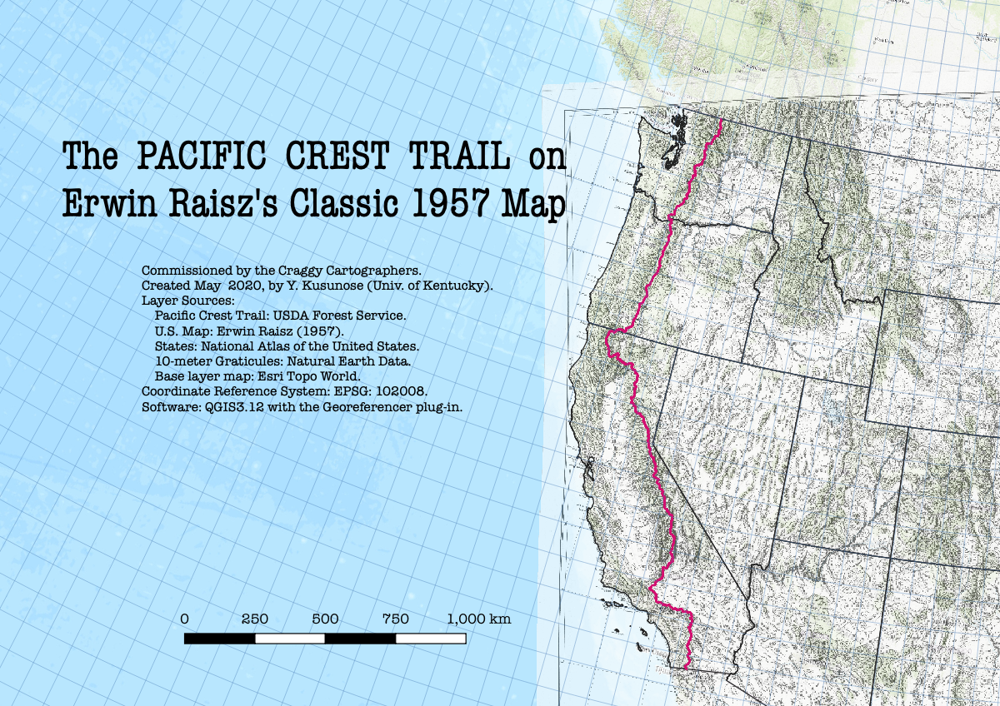

The PACIFIC CREST TRAIL on Erwin Raisz's classic 1957 map

Link to higher resolution image.
Authored by YKusunose!
This map was commissioned by the Craggy Cartographers and created by Y. Kusunose using the following layers:
- Pacific Crest Trail shapefile: USDA Forest Service
- U.S. illustrated map: Erwin Raisz (1957)
- U.S. states shapefile: National Atlas of the United States 1:1,000,000-scale data
- 10-meter graticules: Natural Earth Data
- Base layer map: Esri Topo World XYZ Tile
QGIS3.12 and the Georeferencer plug-in were used to georeference Raisz's map onto the EPSG: 102008 Coordinate Reference System.